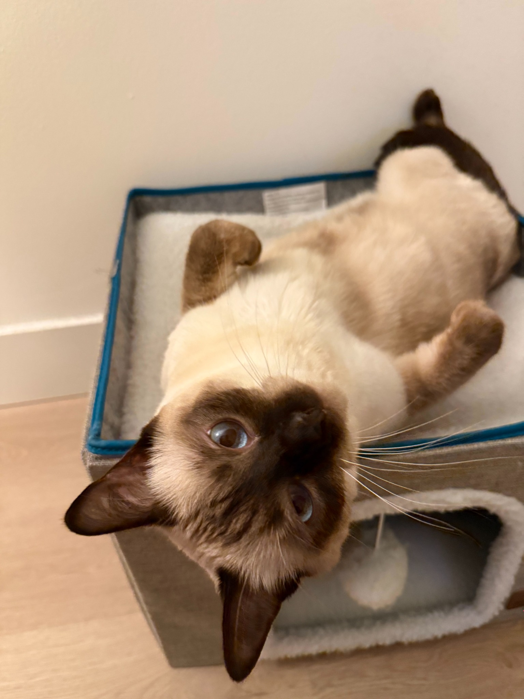
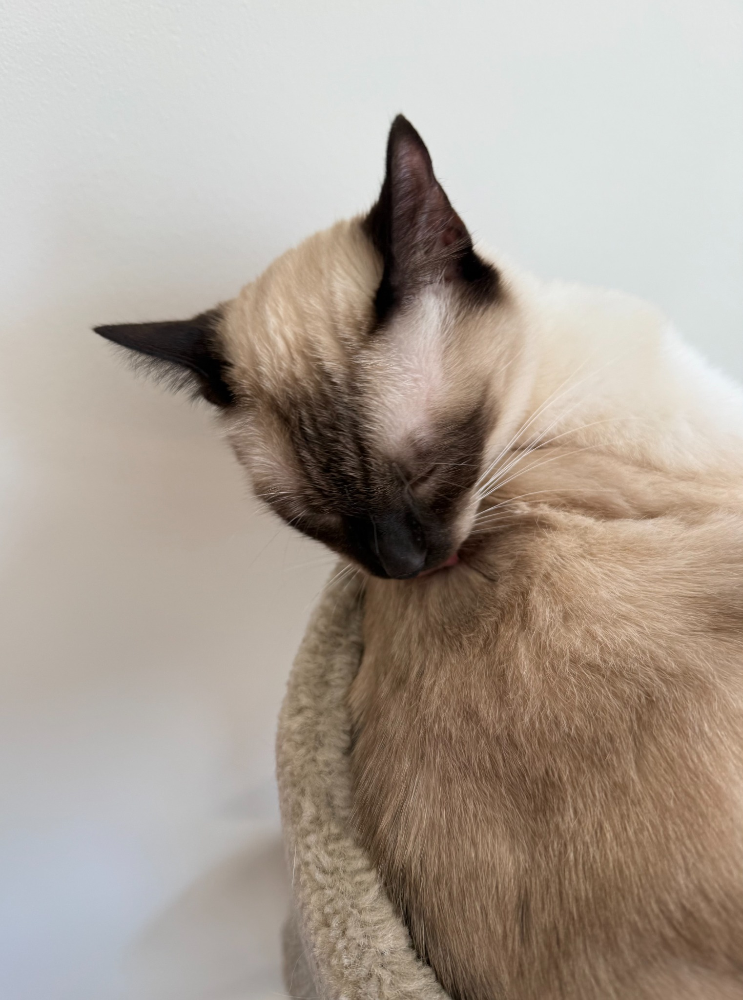

Hobbies
Outside of work, I enjoy running and photography: getting out for a run, or slowing down to notice the little things.
My Cat
I also share my home with a Siamese cat—a much-loved member of the family.


Reading
A few books from my reading list.
2024
- Snow Country
- The Baron in the Trees
- Peak: Secrets from the New Science of Expertise
- Poor Charlie’s Almanack
- Norwegian Wood
- South of the Border, West of the Sun
2023
- Thinking, Fast and Slow
- Who Gets What—and Why: The New Economics of Matchmaking and Market Design
- Grit: The Power of Passion and Perseverance
- Graph Representation Learning